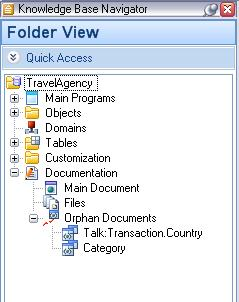

A Document type object is a GeneXus object that allows you to enter free text. The object is saved in the Orphan Documents node, which is found under the Documentation node.  Application documentation is an important part of your Knowledge Base. GeneXus provides a Wiki-style Documentation editor and repository. Wiki-style documentation has been used and adopted by the IT Community worldwide. Documents are edited with an (almost) WYSIWYG editor. They can include links to other documents, attributes, objects, etc. in your Knowledge Base. Files can also be stored in the Knowledge Base as part of your documentation. See alsoAbout of the Preview, Browse and Edit Selectors |